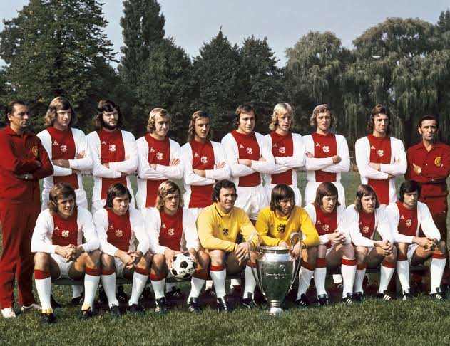

Historia y Leyenda
El club fue fundado el 18 de marzo del año 1900, por Floris Stempel, Carel Reeser y Johan Dade, siendo Stempel su primer presidente si bien sus orígenes datan al año 1894 cuando fue establecido como Football Club Ajax. Fue denominado así por Áyax el Grande, uno de los héroes mitológicos de la Antigua Grecia en su lucha en plena Guerra de Troya. En la Ilíada de Homero, se decía que Áyax era el más grande de todos los griegos junto a su primo Aquiles, e incluso luchó un duelo inconcluso con el defensor de la ciudad troyana Héctor. Según la mayoría de los relatos, Áyax murió suicidándose, por lo que, a diferencia de Aquiles, murió sin ser convocado. Es el club más laureado del fútbol neerlandés con 36 Campeonatos de Liga, 20 Campeonatos de Copa y 9 Supercopas, para un total de 65 títulos nacionales[7] y posee el récord de trofeos ganados en los dos primeros. A nivel internacional es reconocido como uno de los equipos de fútbol más importantes del mundo debido a su palmarés, con un total de 10 títulos internacionales —entre los que destacan 4 Ligas de Campeones, máxima competición a nivel de clubes en Europa, también han ganado dos veces la Copa Intercontinental, 2 veces la Supercopa de la UEFA, una Recopa de Europa, la Copa de la UEFA 1991-92, así como el Karl Rappan Cup, un predecesor no oficial de la Copa Intertoto de la UEFA en 1962. El club es uno de los cinco equipos que se ha ganado el derecho a portar en la manga izquierda de la camiseta la insignia de campeón múltiple y el derecho a conservar en propiedad la Copa de Europa, al ganarla de forma consecutiva entre 1971 y 1973. En 1972, completó un triplete al ganar la Eredivisie neerlandesa, la Copa KNVB y la Copa de Europa. Los últimos trofeos internacionales del Ajax fueron la Liga de Campeones de la UEFA y la Copa Intercontinental, ambas en 1995, donde derrotó al Milan en la final, y perdió la final de la Liga de Campeones de 1996 en los penaltis ante la Juventus. El 7 de diciembre de 2021, tras el partido de local ante el Sporting CP, se incorporó el Ajax, en una escasa lista de ocho clubes de fútbol que han ganado los seis partidos de la fase de grupos durante una temporada de la Copa de Europa/Liga de Campeones de la UEFA.
